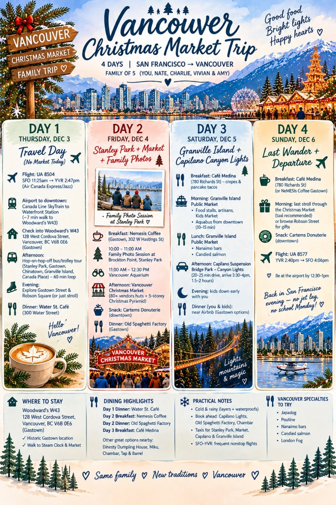

Make this an appOpen this in Safari. Tap Share . No Share button? Tap the small menu icon at the left end of the address bar (or the •••) and pick Share there. Then scroll down, tap Add to Home Screen, then Add. It opens full-screen and keeps working without signal.
🏠Take us homeDirections to Woodward's
🎪Market ticketsPick a 30-min arrival slot
🌉Canyon LightsTimed tickets
❄️ Weather
Loading Vancouver weather…
✏️ Changed from the poster 5 things
✅ Book ahead
Tap ♡ to pick a spot for each meal
🍁 Vancouver specialties to try
The Great Vancouver Hunt
Tap each one when you find it ·
✨ If there's a spare hour
🏠 Where we're staying
Woodward's W43
128 West Cordova Street, Vancouver, BC V6B 0E6 · Gastown
✓ Historic Gastown · ✓ Walk to the Steam Clock and the Market · London Drugs and Nesters Market (groceries) are in the same complex.
✈️ Flights
Thu Dec 3UA 8504
SFO 11:25 AM → YVR 2:47 PM Sun Dec 6UA 8577
YVR 2:40 PM → SFO 4:06 PM
SFO 11:25 AM → YVR 2:47 PM Sun Dec 6UA 8577
YVR 2:40 PM → SFO 4:06 PM
Both are United flight numbers flown by Air Canada Express (Jazz), so check in and drop bags with Air Canada — Terminal 2 at SFO. Coming home you clear U.S. customs in Vancouver before boarding, which is why the plan says airport by 12:30–1. Confirmation codes are left off this page on purpose; they're in the airline app and email.
🚆 Getting around
- Airport → downtown: Canada Line SkyTrain to Waterfront Station, under 30 minutes, then ~7 minutes on foot. Each adult taps their own credit card or Apple Pay at the gate — no ticket needed. Kids 12 and under ride free with a paying adult. Trips from the airport add a $6.50 fee; trips back to it don't.
- Taxis: five of us won't fit a sedan — ask for a van, or order UberXL.
- Granville Island: Aquabus mini-ferry from downtown, 10–15 minutes.
- Capilano: free shuttle from Canada Place for ticket holders, or a 20–25 minute taxi.
- Daylight: sunset is about 4:15 PM. Outdoor sights before 4, lights after.
🎪 Christmas Market hours our dates
Thu Dec 34:00 – 9:30 PMFri Dec 44:00 – 9:30 PMSat Dec 511:30 AM – 10:00 PMSun Dec 611:30 AM – 9:30 PM
Jack Poole Plaza, 1055 Canada Place — about a 15-minute walk from Woodward's. Single tickets need a 30-minute arrival window; stay as long as you like. Kids 6 and under are free. Friday's 4:00 slot is sold out; ours is 4:30.
💱 Money
Canadian → U.S. dollars
≈ US$—
Cards and Apple Pay work everywhere. Tip like home.
🧳 Pack
📍 Maps
Open map buttons in
Emergency in Canada: 911, same as home.
🖼️ The original

♡ Same family ♡ New traditions ♡ Vancouver ♡Itinerary by Courtenay · Updated Nov 27, 2026 — hours change, so tap through before you go.